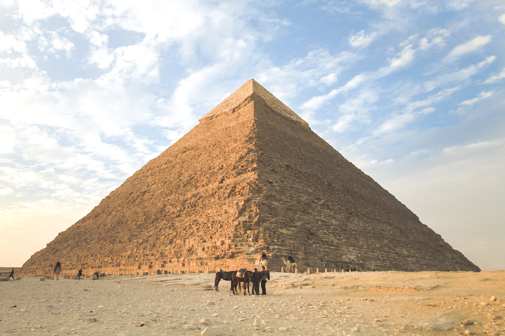
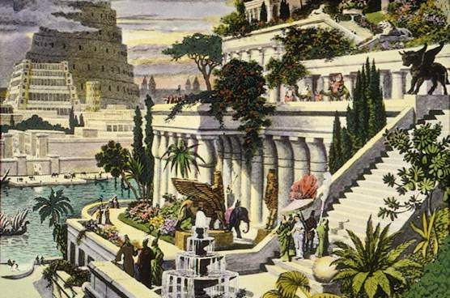
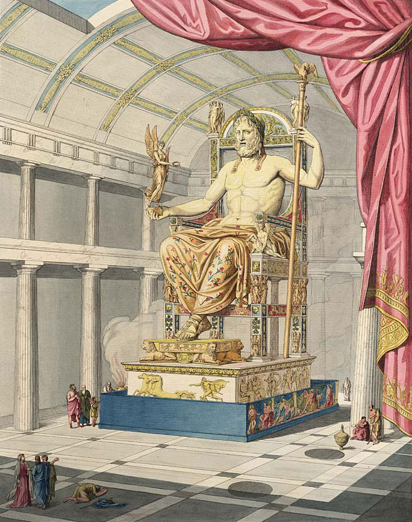

Welcome to my Project! this projects purpose is to give concise descriptions of the 7 Ancient Wonders of the World.
I chose to do this due to my fascination of the Ancient Wonders of the World and how they came to be destroyed. Enjoy!
The pyramids of Giza are the longest standing ancient wonder of the world which was the first one known to be built,
and the only one still fully standing. (This is also the only one I've been to).
The hanging gardens of babylon is the only ancient wonder of the world that hasn't been confirmed to exist,
although has been mentioned in writings of people who also mentioned the other 7 ancient wonders of the world.
The statue of zeus was taken around to many different places before meeting its demise to an earthquake.


